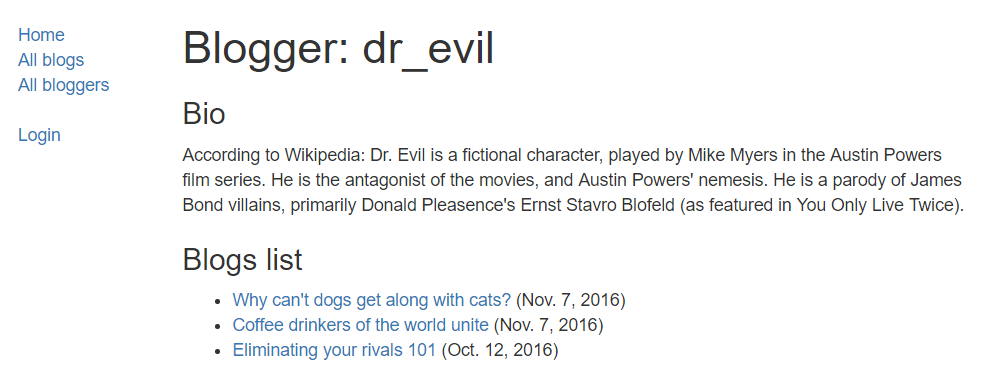

In this assessment you'll use the Django knowledge you've picked up in the Django Web Framework (Python) module to create a very basic blog.
| Prerequisites: | Before attempting this assessment you should have already worked through all the articles in this module. |
|---|---|
| Objective: | To test comprehension of Django fundamentals, including URL configurations, models, views, forms, and templates. |
The pages that need to be displayed, their URLs, and other requirements, are listed below:
| Page | URL | Requirements |
|---|---|---|
| Home page | / and /blog/ |
An index page describing the site. |
| List of all blog posts | /blog/blogs/ |
List of all blog posts:
|
| Blog author (blogger) detail page | /blog/blogger/<author-id> |
Information for a specified author (by id) and list of their blog posts:
|
| Blog post detail page | /blog/<blog-id> |
Blog post details.
|
| List of all bloggers | /blog/bloggers/ |
List of bloggers on system:
|
| Comment form page | /blog/<blog-id>/create |
Create comment for blog post:
|
| User authentication pages | /accounts/<standard urls> |
Standard Django authentication pages for logging in, out and setting the password:
|
| Admin site | /admin/<standard urls> |
Admin site should be enabled to allow create/edit/delete of blog posts, blog authors and blog comments (this is the mechanism for bloggers to create new blog posts):
|
In addition you should write some basic tests to verify:
__str__() returns the expected value).get_absolute_url() returns the expected URL).There are of course many other tests you can run. Use your discretion, but we'll expect you to do at least the tests above.
The following section shows screenshots of a site that implements the requirements above.
The following screenshots provide an example of what the finished program should output.
This displays the list of all blog posts (accessible from the "All blogs" link in the sidebar). Things to note:
This provides links to all bloggers, as linked from the "All bloggers" link in the sidebar. In this case we can see from the sidebar that no user is logged in.
This shows the detail page for a particular blog.
Note that the comments have a date and time, and are ordered from oldest to newest (opposite of blog ordering). At the end we have a link for accessing the form to add a new comment. If a user is not logged in we'd instead see a suggestion to log in.
This is the form to add comments. Note that we're logged in. When this succeeds we should be taken back to the associated blog post page.
This displays bio information for a blogger along with their blog posts list.

The following sections describe what you need to do.
This project is very similar to the LocalLibrary tutorial. You will be able to set up the skeleton, user login/logout behavior, support for static files, views, URLs, forms, base templates and admin site configuration using almost all the same approaches.
Some general hints:
get_queryset(self) to do the filtering (much like in our library class LoanedBooksAllListView) and get the author information from the URL.get_context_data() (discussed below).CreateView. If you use a CreateView (recommended) then:
get_context_data() as discussed below). form_valid() function so it can be saved into the model (as described here — Django docs). In that same function we set the associated blog. A possible implementation is shown below (pk is a blog id passed in from the URL/URL configuration).
def form_valid(self, form):
"""
Add author and associated blog to form data before setting it as valid (so it is saved to model)
"""
#Add logged-in user as author of comment
form.instance.author = self.request.user
#Associate comment with blog based on passed id
form.instance.blog=get_object_or_404(Blog, pk = self.kwargs['pk'])
# Call super-class form validation behavior
return super(BlogCommentCreate, self).form_valid(form)
get_success_url() and "reverse" the URL for the original blog. You can get the required blog ID using the self.kwargs attribute, as shown in the form_valid() method above.We briefly talked about passing a context to the template in a class-based view in the Django Tutorial Part 6: Generic list and detail views topic. To do this you need to override get_context_data() (first getting the existing context, updating it with whatever additional variables you want to pass to the template, and then returning the updated context). For example, the code fragment below shows how you can add a blogger object to the context based on their BlogAuthor id.
class SomeView(generic.ListView):
...
def get_context_data(self, **kwargs):
# Call the base implementation first to get a context
context = super(SomeView, self).get_context_data(**kwargs)
# Get the blogger object from the "pk" URL parameter and add it to the context
context['blogger'] = get_object_or_404(BlogAuthor, pk = self.kwargs['pk'])
return context
The assessment for this task is available on Github here. This assessment is primarily based on how well your application meets the requirements we listed above, though there are some parts of the assessment that check your code uses appropriate models, and that you have written at least some test code. When you're done, you can check out our the finished example which reflects a "full marks" project.
Once you've completed this module you've also finished all the MDN content for learning basic Django server-side website programming! We hope you enjoyed this module and feel you have a good grasp of the basics!
{{PreviousMenu("Learn/Server-side/Django/web_application_security", "Learn/Server-side/Django")}}